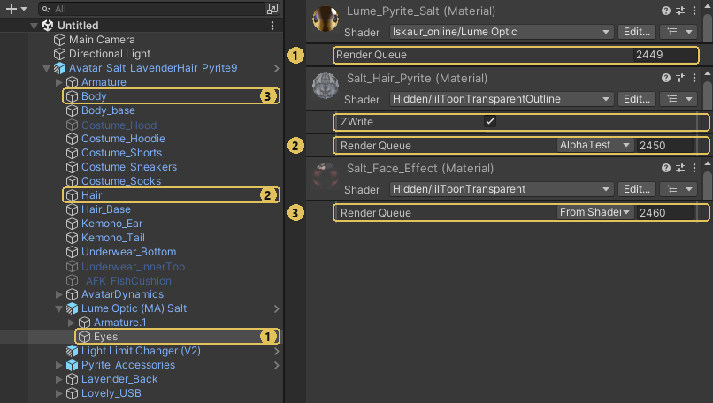

Do the eyes vanish entirely behind transparent bangs?
1-1. Draw anything that must show through a transparent surface before that surface
- If you don't
- If the bangs are a transparent material that writes depth (2450) and the eye shader is at 3000, the bangs have already filled in depth by the time the eyes are drawn. The eyes that should show through the bangs drop out entirely. The stock eyes painted on the face were at 2000 and looked fine, so the problem only surfaced after the eyes were replaced.
- Do this
- Move the eyes to the number just before the bangs (2449). Moving a queue also changes its order relative to whatever sat in between. Here, the blush and tear effects at 2460 ended up on top of the eyes, so I rechecked the surrounding effects as well.
